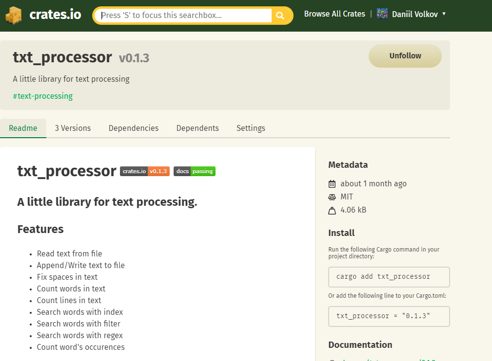

Txt processor
A little library for text processing.
A library for working with text data written in Rust. At the time of the start of development, I wanted to release another crate, which could also be useful to someone, especially since I did not find similar analogs to my idea (maybe I was looking badly). The essence of the library is that the user creates an object of the TxtProcessor structure and uses it to process text or search for the necessary data. Pretty simple and helpful.
